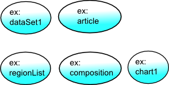
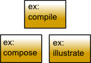
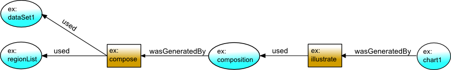
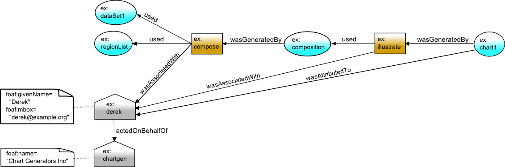
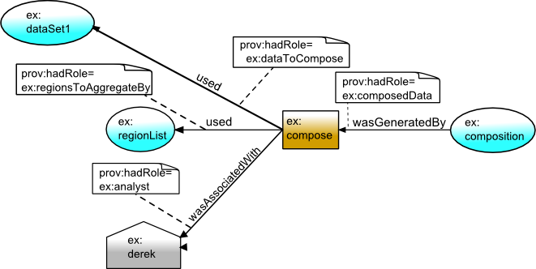
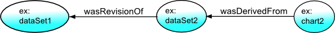
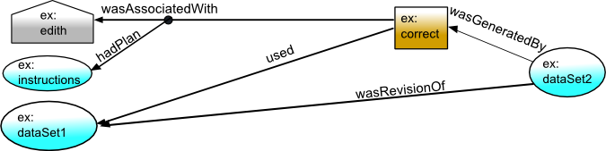
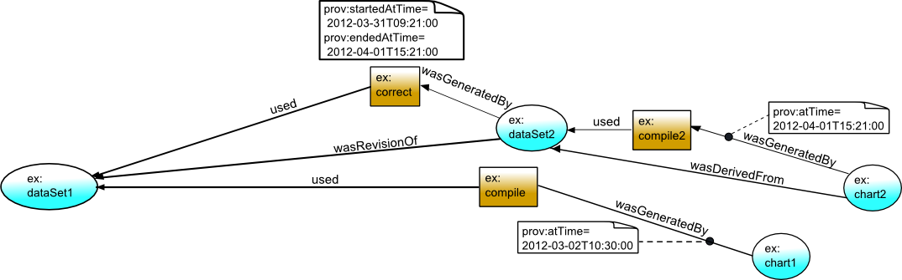
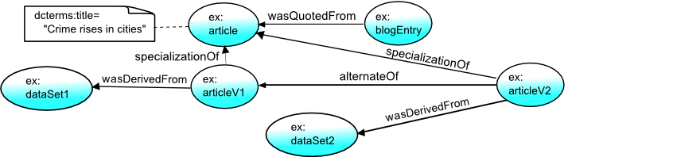

1. Introduction
This primer document provides an accessible introduction to the PROV
specification for provenance on the Web.
The provenance of digital objects represents their origins. PROV is a
proposed specification to represent provenance records,
which contain descriptions of the entities
and activities involved in producing and delivering or otherwise influencing a
given object.
For the remainder of this document, we use the term 'provenance' to refer also
to records of provenance, except where the distinction is important for clarity.
By knowing the provenance of an object, we can make determinations
about how to use it. Provenance can be used for many purposes, such as
understanding how data was collected so it can be meaningfully used, determining
ownership and rights over an object, making judgments about information to
determine whether to trust it, verifying that the process and steps used to obtain a
result complies with given requirements, and reproducing how something was generated.
As a specification for provenance, PROV accommodates all those different uses
of provenance. Different people may have different perspectives on provenance,
and as a result different types of information might be captured in provenance records.
One perspective might focus on agent-centered provenance, that is, what entities
were involved in generating or manipulating the information in question. For example,
in the provenance of a picture in a news article we might capture the photographer who
took it, the person that edited it, and the newspaper that published it. A second perspective
might focus on object-centered provenance, by tracing the origins of portions of a
document to other documents. An example is having a web page that was assembled from content
from a news article, quotes of interviews with experts, and a chart that plots data from a
government agency. A third perspective one might take is on process-centered provenance,
capturing the actions and steps taken to generate the information in question. For example, a
chart may have been generated by invoking a service to retrieve data from a database, then
extracting certain statistics from the data using some statistics package, and finally
processing these results with a graphing tool.
Provenance records are metadata. There are other kinds of metadata that is
not provenance. For example, the size of an image is metadata of
that image but it is not provenance.
For general background on provenance, a
comprehensive overview of requirements, use cases, prior research, and proposed
vocabularies for provenance are available from the
Final Report of the W3C Provenance Incubator Group.
That document contains three general scenarios
that may help identify the provenance aspects of planned applications and
help plan the design of a provenance system.
This primer document aims to ease the adoption of the PROV specifications by providing:
- An intuitive explanation of how PROV models provenance. A detailed description of
all the concepts and relations in the PROV Data Model is provided in [PROV-DM].
- A simple self-contained example that illustrates how to produce and use PROV assertions, highlighting how
to combine PROV with other popular vocabularies such as FOAF and Dublin Core. A description
of the formal PROV ontology (PROV-O) can be found in [PROV-O].
- Example snippets using a notation of PROV designed for human
consumption (PROV-N). Details of this notation can be found at [PROV-N].
There are additional reference documents for PROV that are not covered in this
primer, including the PROV Access and Query aspects of the specification (PROV-AQ),
the constraints on the PROV data model (PROV-DM-CONSTRAINTS),
a formal semantics of the PROV data model (PROV-SEM), and the PROV XML notation
(PROV-XML).
2. Intuitive overview of PROV
This section provides an intuitive explanation of the main concepts in PROV.
As with the rest of this document, it should be treated as a starting point for
understanding the model. The PROV-DM data model document [PROV-DM]
provides precise definitions and constraints to be used.
The following diagram provides a high level overview of the structure of PROV records,
limited to some key PROV concepts discussed in this document.
The diagram is the same that appears in the [PROV-DM] document.
Note that because PROV is meant to describe how things were created or delivered,
PROV relations are named so they can be used in assertions about the past.
This also affects the domain and range of the relations in PROV.

2.1 Entities
In PROV, physical, digital, conceptual, or other kinds of thing are called
entities.
Examples of such entities are a web page, a chart, and a spellchecker.
Provenance records can describe the provenance of entities, and
an entity’s provenance may refer to many other entities. For example, a document D is
an entity whose provenance refers to other entities such as a chart inserted into D,
and the dataset that was used to create that chart.
Entities may be described as having different attributes and
be described from different perspectives. For example,
document D as stored in my file system, the second version of document D,
and D as an evolving document,
are three distinct entities for which we may describe provenance.
2.2 Activities
Activities are how entities come into
existence and how their attributes change to become new entities,
often making use of previously existing entities to achieve this.
They are
dynamic aspects of the world, such as actions, processes, etc.
For example, if the second version of document D was generated
by a translation from the first version of the document in another language,
then this translation is an activity.
2.3 Use and Generation
Activities generate new entities.
For example, writing a document brings the document into existence, while
revising the document brings a new version into existence.
Generation does not always occur at the end of an activity, and an activity may generate entities
part-way through.
Activities also make use of entities. For example, revising a document
to fix spelling mistakes uses the original version of the document as well
as a list of corrections.
2.4 Agents and Responsibility
An agent takes a role in an activity such
that the agent can be assigned some degree of responsibility for the activity taking
place.
An agent can be a person, a piece of software, an inanimate object, an organization, or
other entities that may be ascribed responsibility.
When an agent has some responsibility for an activity, PROV says the agent was
associated with the activity, where several agents may be associated with
an activity and vice-versa.
Consider a chart displaying some statistics
regarding crime rates over time in a linear regression. To represent the
provenance of that chart, we could state that the person who created the
chart was an agent involved in its creation, and that the software used to
create the chart was also an agent involved in that activity.
An agent may be acting on behalf of others, e.g. an employee on behalf of their
organization, and we can express such chains of responsibility in the provenance.
We can also describe that an entity is attributed to an agent to express
the agent's responsibility for that entity, possibly along with other agents.
This description can be understood as a shorthand
for saying that the agent was responsible for the activity which generated
the entity.
One may want to describe the provenance of an agent. For example, an organization
responsible for the creation of a report may evolve over time as the report is written as
some members leave and others join. To make provenance assertions about an agent in PROV ,
the agent must be declared explicitly both as an agent and as an entity.
2.5 Roles
A role is a description of the function or the part that an entity
played in an activity. Roles specify
the relationship between an entity and an activity, whether
how an activity used an entity or generated an entity. Roles also specify how agents are
involved in an activity, qualifying their participation in the activity or
specifying for what aspect of it each agent was responsible.
For example, an agent may play the role of "editor" in an activity that uses
one entity in the role of "document to be edited" and another in the role of
"addition to be made to the document", to generate a further entity in the role of "edited document".
Roles are application specific, so PROV does not define any particular roles.
2.6 Derivation and Revision
When one entity's existence, content, characteristics and so on are
at least partly due to another entity, then we say that the former was
derived from the latter. For example, one document may contain
material copied from another,
and a chart was derived from the data that it illustrates.
PROV allows some common, specialized kinds of derivation to be described.
For example, a given entity, such as a document, may go through multiple revisions
(also called versions and other comparable terms) over time. Between revisions,
one or more attributes of the entity may change.
In PROV, the result of each revision is a new entity.
PROV allows one to relate those entities by making a description that
one was a revision of another.
Another specialized kind of derivation is to say that one entity, commonly
a document, quotes from another.
2.7 Plans
Activities may follow pre-defined procedures, such as recipes, tutorials, instructions, or workflows.
PROV refers to these, in general, as plans, and allows the description that a plan was followed, by agents,
in executing an activity.
2.8 Time
Time is often a critical aspect of provenance.
PROV allows the timing of significant events to be described, including
when an entity was generated or used, or when an activity started
and finished. For example, the model can be used to describe facts such as when a new
version of a document was created (generation time), or when a document was
edited (start and end of the editing activity).
2.9 Alternate Entities and Specialization
Entities are defined in a flexible way in PROV, allowing for different
perspectives to be taken as appropriate for the application. The following
are examples illustrate this idea.
- The same entity can appear with different descriptions in a provenance record
because each appearance emphasizes different aspects of the entity, e.g.
a book may be described by its title in one place and by its author and publication date
in another.
- The same entity can evolve over time into different
versions, e.g. a document that is repeatedly updated and has
subsequent releases over time.
- The same entity can be copied
or replicated, e.g. a document may be copied to several directories.
- An entity can go through different incarnations, e.g.
a committee producing a report may have a set of members when the report
is first released and have a different set of members when an update of
the report is released.
In all these situations,
the more specific entities (the versions, copies, incarnations) can be said in PROV to be specializations
of the more general entity (the book, the document or the committee as a general entity).
The specific entities in each example are also alternates of each other, as they are specializations
of the same general entity.
Being aware that two entities are alternates allows those
consuming the PROV data to know that understanding the provenance of one entity is salient
to understanding the provenance of the other. Knowing that alternate entities are
specializations of another allows a consumer of PROV to refer to the general entity
with a unique identifier even though it is specified as different alternates
throughout the provenance records.
3. Examples of Key Concepts in PROV
In the following sections, we show how PROV can be used to model
provenance in a specific example scenario.
We include samples of how the formal ontology (PROV-O)
can be used to represent the PROV descriptions as RDF triples.
These are shown using the Turtle notation [TURTLE]. In
the latter depictions, the namespace prefix prov denotes
terms from the PROV ontology, while ex denotes terms specific to the example.
We illustrate in these examples how PROV can be used in combination with other
languages, such as FOAF and Dublin Core (with namespace prefix foaf and
dcterms respectively).
We also provide a representation of the examples in the Provenance
Notation, PROV-N, used in the data model document. The full PROV-N data
for the examples in this section is
included in the appendix.
3.1 Entities
An online newspaper publishes an article with a chart about crime statistics making using of data (GovData) provided through a government portal.
The article includes a chart based on the data, with data values composed (aggregated) by
geographical regions.
A blogger, Betty, looking at the article, spots what she thinks to be an error in the chart.
Betty retrieves a record of the provenance of the article, describing how it was created.
Betty finds the following descriptions of entities in the provenance:
ex:article a prov:Entity ;
dcterms:title "Crime rises in cities" .
ex:dataset1 a prov:Entity .
ex:regionList a prov:Entity .
ex:composition a prov:Entity .
ex:chart1 a prov:Entity .
These statements, in order, refer to the article (ex:article),
an original data set (ex:dataSet1),
a list of regions (ex:regionList),
data aggregated by region (ex:composition),
and a chart (ex:chart1), and state that each is an entity.
Any entity may have attributes not specific to provenance, such as the title
of the article, expressed using dcterms:title above.
PROV data is commonly visualized for human consumption using particular conventions,
which we will introduce over the following sections. To start with, entities
are denoted using ovals, as shown below.

3.2 Activities
Further, the provenance describes that there was
an activity (ex:compile) denoting the compilation of the
chart from the data set.
ex:compile a prov:Activity .
The provenance also includes reference to the more specific steps involved in this compilation,
which are first composing the data by region (ex:compose) and then generating the
chart graphic (ex:illustrate).
ex:compose a prov:Activity .
ex:illustrate a prov:Activity .
In visualizations of the PROV data, activities are depicted as rectangles, as below.

3.3 Use and Generation
Concluding the basic description of what occurred, the provenance
describes the key relations among the above
entities and activities, i.e. the use of an entity by an activity,
or the generation of an entity by an activity.
For example, the descriptions below state that the composition activity
(ex:compose) used the original data set, that it used the list of
regions, and that the composed data was generated by this activity.
ex:compose prov:used ex:dataSet1 ;
prov:used ex:regionList .
ex:composition prov:wasGeneratedBy ex:compose .
Similarly, the chart graphic creation activity (ex:illustrate)
used the composed data, and the chart was generated by this activity.
ex:illustrate prov:used ex:composition .
ex:chart1 prov:wasGeneratedBy ex:illustrate .
In visualizing the PROV data, usage and generation are connections between
entities and activities.

3.4 Agents and Responsibility
Digging deeper, Betty wants to know who compiled the chart.
Betty sees that Derek was involved in both the composition and
chart creation activities:
ex:compose prov:wasAssociatedWith ex:derek .
ex:illustrate prov:wasAssociatedWith ex:derek .
The record for Derek provides the
following information, of which the first lines are PROV-O statements that
Derek is an agent, specifically a person, followed by (non-PROV) statements
giving general properties of Derek.
ex:derek a prov:Agent ;
a prov:Person ;
foaf:givenName "Derek"^^xsd:string ;
foaf:mbox <mailto:derek@example.org> .
Derek works as part of an organization, Chart Generators Inc, and so the provenance
declares that he acts on their behalf. Note that the organization is itself
an agent.
ex:derek prov:actedOnBehalfOf ex:chartgen .
ex:chartgen a prov:Agent ;
a prov:Organization ;
foaf:name "Chart Generators Inc" .
Finally, there is an explicit statement in the provenance that the chart was
attributed to Derek.
ex:chart1 prov:wasAttributedTo ex:derek .
We can extend our graphical depiction to show the agents, association and attribution links.

3.5 Roles
For Betty to understand where the error lies, she needs to have more detailed
information on how entities have been used in and generated
by activities. Betty has determined that ex:compose used
entities ex:regionList and ex:dataSet1, but she does not
know what function these entities played in the processing. Betty
also knows that ex:derek was associated with the activities, but she does
not know if Derek was the analyst responsible for determining how the data
should be composed.
The above information is described as roles in the provenance. The composition
activity involved entities in four roles: the data to be composed (ex:dataToCompose),
the regions to aggregate by (ex:regionsToAggregateBy), the
resulting composed data (ex:composedData), and the
analyst doing the composition (ex:analyst).
ex:dataToCompose a prov:Role .
ex:regionsToAggregateBy a prov:Role .
ex:composedData a prov:Role .
ex:analyst a prov:Role .
Examples in the sections above show descriptions of the simple facts that the
composition activity used, generated and was enacted by entities/agents.
For example, the usage of the data set by the compose activity is expressed
as follows.
ex:compose prov:used ex:dataSet1 .
The
provenance can contain more details of exactly how these entities and agents
were involved in the activity.
To express this, PROV-O refers to qualified usage, qualified generation, etc.,
which are descriptions consisting of several statements about how use, generation, etc. took place.
For example, we may describe the plan followed by an agent in performing an activity, or
the time at which an activity generated an entity, both illustrated later.
Another example of qualified involvement is the role an entity played in an activity.
The descriptions below state
that the composition activity (ex:compose) included the usage
of the government data set (ex:dataSet1) in the role of the data
to be composed (ex:dataToCompose).
ex:compose prov:qualifiedUsage [
a prov:Usage ;
prov:entity ex:dataSet1 ;
prov:hadRole ex:dataToCompose
] .
This can then be distinguished from the same activity's usage of the list of
regions because the roles played are different.
ex:compose prov:qualifiedUsage [
a prov:Usage ;
prov:entity ex:regionList ;
prov:hadRole ex:regionsToAggregateBy
] .
Similarly, the provenance includes descriptions that the same activity was
enacted in a particular way by Derek, so it indicates that he had the role of
ex:analyst, and that the entity ex:composition took the role of the composed
data in what the activity generated:
ex:compose prov:qualifiedAssociation [
a prov:Association ;
prov:agent ex:derek ;
prov:hadRole ex:analyst
] .
ex:composition prov:qualifiedGeneration [
a prov:Generation ;
prov:activity ex:compose ;
prov:hadRole ex:composedData
] .
Depicting the above visually, we have the following.

3.6 Derivation and Revision
After looking at the detail of the compilation activity, there appears
to be nothing wrong, so Betty concludes the error is in the government dataset.
She looks at the dataset ex:dataSet1,
and sees that it is missing data from one of the zipcodes in the area. She contacts
the government agency, and a new version of GovData is created, declared to be the
next revision of the data. The provenance of this new dataset,
ex:dataSet2, states that it is a revision of the
old data set, ex:dataSet1.
ex:dataSet2 a prov:Entity ;
prov:wasRevisionOf ex:dataSet1 .
Derek notices that there is a new dataset available and creates a new chart based on the revised data,
using another compilation activity. Betty checks the article again at a
later point, and wants to know if it is based on the old or new GovData.
She sees a new description stating that the new chart is derived from the new dataset.
ex:chart2 a prov:Entity ;
prov:wasDerivedFrom ex:dataSet2 .
and that the new chart is a revision of the original one:
ex:chart2 a prov:Entity ;
prov:wasRevisionOf ex:chart1 .
Derivation and revision are connections between entities, and so depicted
with arrows in our visualization.

3.7 Plans
Betty then wishes to know whether the new data set correctly addresses
the error that existed before. The provenance of the new dataset,
ex:dataSet2, describes not only who performed the corrections,
Edith, but also what instructions she followed in doing so (in PROV terms, the plan).
First, the correction activity (ex:correct), the person who corrected
it, Edith (ex:edith), and the correction instructions (ex:instructions)
are described.
ex:correct a prov:Activity .
ex:edith a prov:Agent, prov:Person .
ex:instructions a prov:Plan .
The connection between them is expressed in PROV-O using a qualified association giving details of
how Edith was associated with the correction activity,
including that she followed the above correction instructions.
ex:correct prov:qualifiedAssociation [
a Association ;
prov:agent ex:edith ;
prov:hadPlan ex:instructions
] .
ex:dataSet2 prov:wasGeneratedBy ex:correct .
Plans are additional information about the connection from an activity to
an agent, and so, in our visualization, connect to the link between them.

3.8 Time
The government agency that produced GovData is concerned to know how long
the incorrect chart was in circulation before the corrected chart was created.
That is, they wish to compare the times at which the original and the corrected
charts were generated. Time of generation is expressed in PROV-O using a qualified
description of the generation. The snippet below shows that the second chart
was generated roughly a month after the first.
ex:chart1 prov:qualifiedGeneration [
a prov:Generation ;
prov:activity ex:compile ;
prov:atTime "2012-03-02T10:30:00"^^xsd:dateTime
] .
ex:chart2 prov:qualifiedGeneration [
a prov:Generation ;
prov:activity ex:compile2 ;
prov:atTime "2012-04-01T15:21:00"^^xsd:dateTime
] .
To ensure their procedures are efficient, the agency also wish to know how long the
corrections took once the error was discovered. That is, they wish to know the
start and end times of the correction activity (ex:correct).
These details are expressed as follows, showing that the corrections took a
little over a day.
ex:correct prov:startedAtTime "2012-03-31T09:21:00"^^xsd:dateTime ;
prov:endedAtTime "2012-04-01T15:21:00"^^xsd:dateTime .
Time is visualized as additional information regarding activities or the
links between activities and entities or agents.

3.9 Alternate Entities and Specialization
Before noticing anything wrong with the government data, Betty had already
posted a blog entry about the article. The blog entry had its own published
provenance, stating that it quoted from the article.
ex:blogEntry a prov:Entity ;
prov:wasQuotedFrom ex:article .
The newspaper, from past experience, anticipated that there could be revisions
to the article, and so created identifiers for both the article in general
(ex:article) as a URI that got redirected to the first version of the article (ex:articleV1),
allowing both to be referred to as entities in provenance data.
In the provenance records, the newspaper describes the connection between the two: that
the first version of the article is a specialization of the article in general.
ex:articleV1 prov:specializationOf ex:article .
Later, after the data set is corrected and the new chart generated, a new version
of the article is created, ex:articleV2, with its own URI where the article
is redirected to. To ensure that those
consulting the provenance of ex:articleV2 understand that it
is connected with the provenance of ex:article and ex:articleV1,
the newspaper describes how these entities are related.
ex:articleV2 prov:specializationOf ex:article .
ex:articleV2 prov:alternateOf ex:articleV1 .
Specialization and alternate relations connect entities, and so are visualized
as links between them.

3.10 Complete PROV data
The set of provenance records above could be grouped into one or multiple bundles, referred to as accounts.
We visualize the whole example as a single account below.

A. PROV-N Examples
Below we give translations of the working example snippets into the Provenance
Notation (PROV-N).
A.1 Entities
entity(ex:article, [dcterms:title="Crime rises in cities"])
entity(ex:dataSet1)
entity(ex:regionList)
entity(ex:composition)
entity(ex:chart1)
A.2 Activities
activity(ex:compile)
activity(ex:compose)
activity(ex:illustrate)
A.3 Use and Generation
used(ex:compose, ex:dataSet1, -)
used(ex:compose, ex:regionList, -)
wasGeneratedBy(ex:composition, ex:compose, -)
used(ex:illustrate, ex:composition, -)
wasGeneratedBy(ex:chart1, ex:illustrate, -)
A.4 Agents and Responsibility
agent(ex:derek, [ prov:type="prov:Person", foaf:givenName = "Derek",
foaf:mbox= "<mailto:derek@example.org>"])
wasAssociatedWith(ex:compose, ex:derek, -)
wasAssociatedWith(ex:illustrate, ex:derek, -)
agent(ex:chartgen, [ prov:type="prov:Organization",
foaf:name = "Chart Generators Inc"])
actedOnBehalfOf(ex:derek, ex:chartgen, ex:compose)
wasAttributedTo(ex:chart1, ex:derek)
A.5 Roles
Roles are not declared directly in PROV, rather they are attributes of
relations. Thus, the entire Turtle example in Section 3.5 is rendered as follows:
used(ex:compose, ex:dataSet1, -, [ prov:role = "ex:dataToCompose"])
used(ex:compose, ex:regionList, -, [ prov:role = "ex:regionsToAggregteBy"])
In the first description above, note that this adds a "role" attribute to the first 'used' description of A.3.
Similarly in the second description, we have added a "role" attribute to the second 'used' description of A.3.
A.6 Derivation and Revision
wasRevisionOf(ex:dataSet2, ex:dataSet1, -)
wasDerivedFrom(ex:chart2, ex:dataSet2)
A.7 Plans
Similarly to roles, plans are attributes of relations, specifically association relations.
wasAssociatedWith(ex:correct, ex:edith, ex:instructions)
A.8 Time
wasGeneratedBy(ex:chart1, ex:compile, 2012-03-02T10:30:00)
wasGeneratedBy(ex:chart2, ex:compile2, 2012-04-01T15:21:00)
activity(ex:correct, 2012-03-31T09:21:00, 2012-04-01T15:21:00)
A.9 Alternate Entities and Specialization
entity(ex:blogEntry)
wasQuotedFrom(ex:blogEntry, ex:article)
entity(ex:articleV1)
wasDerivedFrom(ex:articleV1, ex:dataSet1)
specializationOf(ex:articleV1, ex:article)
specializationOf(ex:articleV2, ex:article)
alternateOf(ex:articleV1, ex:articleV2)